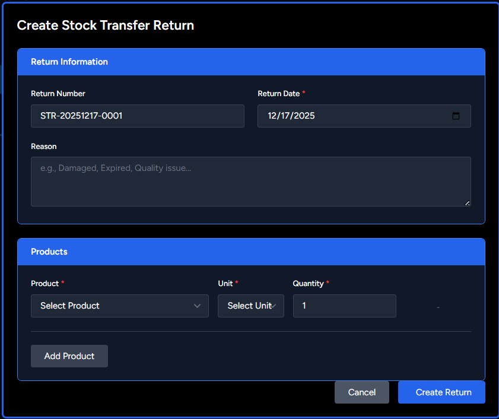

Stock Return
Return stock to suppliers due to defects, damage, or other issues.
Create Stock Return
- Go to Purchasing & Stock → Stock Returns
- Click "Create Stock Return"
- Enter return details:
- Supplier: Supplier to return to
- Return Date: Date of return
- Reference GRN: Link to the original GRN (recommended)
- Remarks: Optional notes
- Add products and quantities to return
- Save to update stock and create credit note
📸 Screenshot: stock-return.png
Place your stock return screenshot here
'">
Place your stock return screenshot here